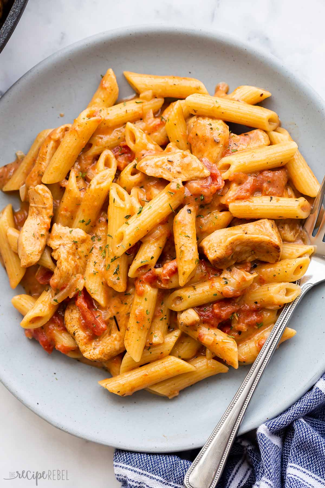

Cajun Chicken Pasta

Description
Cajun chicken pasta is a flavor packed and easy meal for the middle of the week!
Ingredients
- 1 tablespoon olive oil
- 1 tbsp butter
- 1 lb boneless, skinless chicken breast
- 1 yellow onion, diced
- 1/2 lb penne pasta (uncooked)
- 1 can fire roasted diced tomatoes
- 2 cups chicken broth
- 2 ounces cream cheese
- 3 green onions, sliced
- Cajun seasoning
Steps
- Cut the chicken into cubes. Add to a bowl and coat chicken in cajun seasoning. If you'd like extra heat, add a sprinkle of cayenne.
- Add olive oil and butter to a deep skillet. Get pan nice and hot and add chicken to skillet. Cook until there is color on both sides, but it does not need to be cooked all thew ay through at this point.
- Add the diced onion to pan and cook until soft.
- Add the pasta, fire roasted tomatoes (with juice) and chicken broth to skillet. Stir, then put a lid on the skillet and allow to boil.
- Turn heat down to medium-low and let pasta simmer for ten minutes, stirring occasionally, until pasta is cooked and sauce has thickened.
- Add cream cheese in chunks to the pasta and stir until it is melted. Top the pasta with green onions and serve.